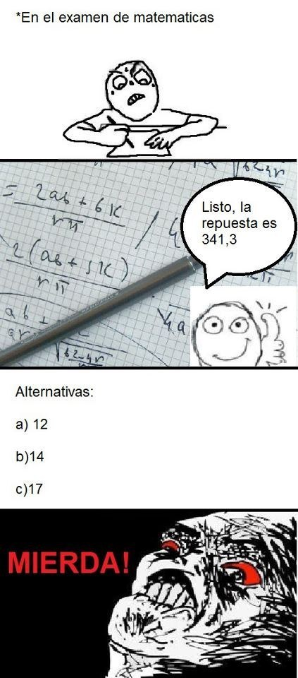

Sesión 4
Multiplicación de polinomios y otras cosas
Antes de comenzar con un nuevo tema repasa tus apuntes de la clase pasada. Asegurate tener bien claros los siguientes conceptos:
- término algebraico,
- coeficiente de un término,
- base(s), literal(es) o variable(s) de un término,
- exponente(s) de un término y
- monomio, binomio, trinomio y polinomio.
Además repasa cómo hacer sumas y restas de polinomios.
El tema de esta sesión es la multiplicación de polinomios. ¡Yupi!
Para ello vamos a repasar primero los siguientes tres temas:
- Leyes de los exponentes
- Grado de un polinomios
- Propiedad distributiva
Leyes de los exponentes
Ve el siguiente video:
Después de ver el video copia en tu cuaderno la siguiente tabla que resume lo que acabas de ver:
| Regla | Ejemplo |
|---|---|
| \( a^{n} \cdot a^{m} = a^{n+m} \) | \( 3^{2} \cdot 3^{3} = 3^{2+3} \) |
| \( \frac{a^{m}}{a^{n}} = a^{m-n} \) | \( \frac{5^{2}}{5^{-4}} = 5^{2-(-4)} \) |
| \( a^{-n} = \frac{1}{ a^{n} } \) | \( 3^{-2} = \frac{1}{ 3^{2} } \) |
| \( a^{0} = 1 \) | \( 12^{0} = 1 \) |
| \( (a^{n})^{m} = a^{n \cdot m} \) | \( (2^{3})^{4} = 2^{3 \cdot 4} \) |
| \( (\frac{a}{b})^{n} = \frac{a^{n}}{b^{n}} \) | \( (\frac{4}{5})^{2} = \frac{4^{2}}{5^{2}} \) |
Grado de un monomio y de un polinomio
Estos son concepto sencillos. Cópia las siguientes definiciones y tablas en tu cuaderno.
El grado de un monomio es la suma de sus exponentes. Ve los siguientes ejemplos:
| Monomio | Exponentes | Grado (suma de los exponentes) |
|---|---|---|
| \( -3x^{2} \) | \( 2 \) | \( 2 \) (monomio de segundo grado) |
| \( 12a^{3}b^{5} \) | \(3, 5\) | \(3 + 5 = 8\) (monomio de grado 8) |
| \( 3n^{4}m^{-1} \) | \(4, -1\) | \(4 + (-1) = 3\) (monomio de grado 3) |
El grado de un polinomio es igual al grado del monomio con mayor grado. Para encontrar el grado de un polinomio tenemos que calcular el grado de cada uno de sus términos y seleccionar el mayor de entre estos.
Por ejemplo, el polinomio \( 3x^{2} - 5x^{7} + 3 \), tiene 3 términos cuyos grados son: 2, 7 y 0, respectivamente. El mayor de estos grados es 7, por lo tanto el polinomio es de grado 7.
Otro ejemplo, el polinomio \( -4a^{5}b^{2} + 5ab - 15a^{4}b^{4} - 11 \), tiene 4 términos cuyos grados son: 7, 2, 8 y 0, respectivamente. Como el mayor de entre estos grados es 8, entonces el grado del polinomio es 8.
Propiedad distributiva
Este tema ya lo vimos cuando repasamos las Propiedades de los números. Repasémolos de nuevo. Ve el siguiente video:
Listo. Ahora estamos listos para el tema de esta sesión. Yeah.

Multiplicación de polinomios
Para realizar la multiplicación de polinomios tendrás que aplicar las leyes de los signos, las leyes de los exponentes, términos semejantes, la propiedad distributiva... todo lo que haz visto hasta el momento. Es muy divertido. Compruébalo en el siguente video:
Para complementar lo que viste en el video revisa tu Guía. Los temas que debes revisar están en las páginas 94 a 96 y son los siguientes:
- Multiplicación de polinomios
- Monomio por monomio
- Monomio por polinomio
- Polinomio por polinomio
Ya terminaste. Yupi. Eso fue todo por esta sesión. Ahora... ¡vamos a hacer ejercicios!
Regresa a Google Classrom y contesta los ejercicios de esta sesión. Puedes poner esta canción mientras haces tus ejercicos.
EXTRA: otro tema que puedes repasar es la división de polinomios. Para ellos puedes ver este video y revisar las páginas 97 a 100 de tu Guía. Este tema casi no viene en tu examen, pero si lo entiendes serás el más popular de tu escuela.